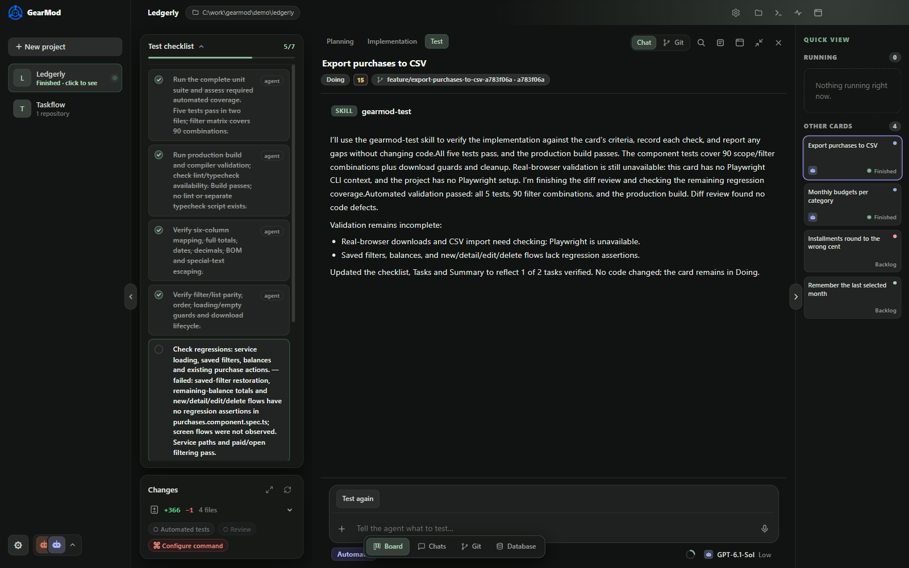
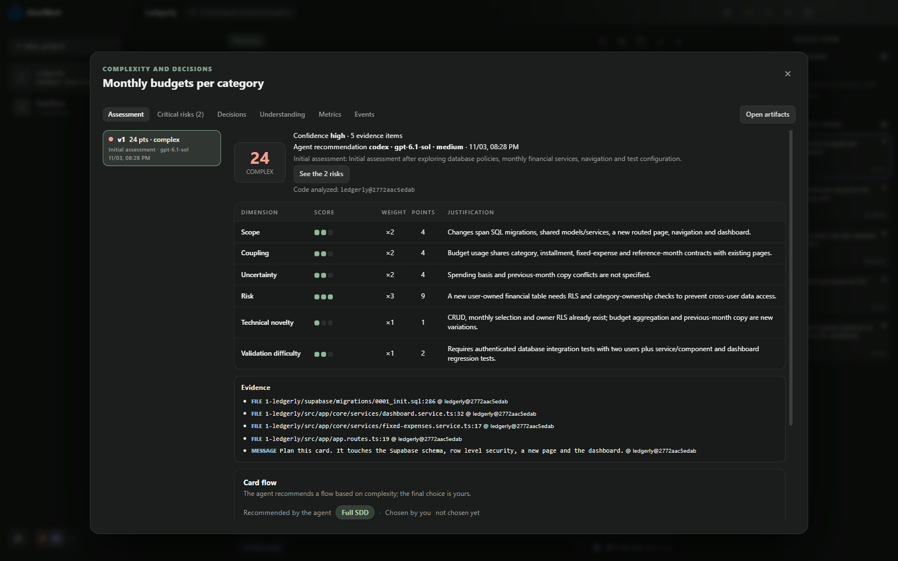
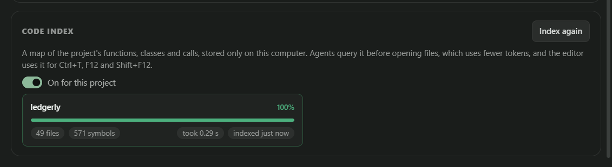

Turn tasks into kanban cards and hand each one to Claude Code or Codex in its own Git worktree. You plan, review and merge.Transforme tarefas em cards e entregue cada um ao Claude Code ou Codex, numa worktree Git própria. Você planeja, revisa e mescla.
The agent is rarely the bottleneck. The mess around it is: shared folders, missing plans and reviews nobody can trace.O gargalo raramente é o agente. É a bagunça em volta dele: pastas compartilhadas, falta de plano e revisões que ninguém consegue rastrear.
Two agents in the same checkout overwrite each other's files and mix up branches. You end up with a half-working tree to untangle by hand.Dois agentes no mesmo checkout sobrescrevem os arquivos um do outro e misturam as branches. Você acaba com uma árvore pela metade para desembaraçar na mão.
A vague prompt turns into a large diff you never asked for. You only learn what the agent understood after it has already written the code.Um prompt vago vira um diff enorme que você não pediu. Você só descobre o que o agente entendeu depois que ele já escreveu o código.
Chats in one window, terminals in another, branches everywhere. Nobody remembers what was tested or which commit belongs to which task.Chats numa janela, terminais em outra, branches por todo lado. Ninguém lembra o que foi testado nem qual commit pertence a qual tarefa.
Plan with the agent, let it implement, test in a separate step, then review and ship from the same window.Planeje com o agente, deixe-o implementar, teste numa etapa separada e revise e entregue na mesma janela.
/ in any chat/ em qualquer chatThe plan is saved as Markdown documents with version history. Edit anything before you start; the agent ticks tasks off as it goes.O plano é salvo como documentos Markdown com histórico de versões. Edite o que quiser antes de começar; o agente vai marcando as tarefas.
Screenshots from a real run: three cards on a sample finance app, planned, implemented and tested by Codex inside GearMod.Capturas de uma execução real: três cards num app de finanças de exemplo, planejados, implementados e testados pelo Codex dentro do GearMod.
The agent reads code only, scores the card and proposes a workflow.O agente só lê código, dá nota ao card e propõe um fluxo.
Spec, plan and tasks saved with version history.Spec, plano e tarefas salvos com histórico de versões.
A worktree and branch are created; tasks tick off live.Worktree e branch são criadas; as tarefas são marcadas ao vivo.
A separate agent runs its own checklist and reports what it couldn't check.Outro agente roda seu checklist e relata o que não conseguiu checar.
Diffs on the Git page, then merge or open a PR.Diffs na página Git; depois, merge ou PR.
The agent asks in the chat and changing the workflow waits for your approval. Nothing moves until you answer.O agente pergunta no chat e trocar o fluxo espera a sua aprovação. Nada anda até você responder.
Tasks are ticked in the side panel and changed files appear below. When it's done, the agent asks to commit: authorize, edit the message or deny.As tarefas são marcadas no painel lateral e os arquivos alterados aparecem abaixo. Ao terminar, o agente pede para commitar: autorize, edite a mensagem ou negue.
The test step records what passed and what it could not check, so you know where to look yourself.A etapa de teste registra o que passou e o que não conseguiu checar, para você saber onde olhar.

The planning agent scores each card from 0 to 3 on six weighted dimensions, with evidence. GearMod recommends a workflow; you make the final call.O agente de planejamento dá nota de 0 a 3 ao card em seis dimensões com peso, com evidências. O GearMod recomenda um fluxo; a decisão final é sua.
| ScoreTotal | LevelNível | WorkflowFluxo |
|---|---|---|
| 0–7 | SimpleSimples | Short flowFluxo curto |
| 8–16 | MediumMédio | Light specSpec leve |
| 17+ | ComplexComplexo | Full SDD |
Dimensions: scope, coupling, uncertainty, risk, technical novelty and validation difficulty. A card with risk 3 never gets the short flow. Weights and limits are configurable per project.Dimensões: escopo, acoplamento, incerteza, risco, novidade técnica e dificuldade de validação. Card com risco 3 nunca recebe o fluxo curto. Pesos e limites são configuráveis por projeto.

main, develop or release/*.main, develop ou release/*.GearMod keeps a local map of your code: functions, classes, calls, imports and tests. Agents query it before opening files. Built with tree-sitter in a background process, stored on your machine.O GearMod mantém um mapa local do seu código: funções, classes, chamadas, imports e testes. Os agentes consultam o mapa antes de abrir arquivos. Feito com tree-sitter em segundo plano, salvo na sua máquina.
Ctrl+T, F12, Shift+F12Ctrl+T, F12, Shift+F12
A PostgreSQL client inside the project. Each connection has a class (dev, test, prod, external); prod and external start read-only, and risky SQL asks for confirmation.Um cliente PostgreSQL dentro do projeto. Cada conexão tem uma classe (dev, test, prod, external); prod e external começam somente leitura e SQL de risco pede confirmação.
Each card gets its own folder and branch, so several agents work at once without stepping on each other or on your checkout.Cada card tem sua própria pasta e branch, então vários agentes trabalham ao mesmo tempo sem atrapalhar uns aos outros nem o seu checkout.
GearMod starts the CLIs you already have installed, with your sign-in and plan. It does not proxy or resell model access.O GearMod inicia as CLIs que você já tem instaladas, com seu login e plano. Não faz proxy nem revende acesso a modelos.
Everything lives under %APPDATA%\GearMod. GearMod sends nothing anywhere; optional features reach the network only when you turn them on. It is not a sandbox: see SECURITY.md.Tudo fica em %APPDATA%\GearMod. O GearMod não envia nada para lugar nenhum; recursos opcionais só usam a rede quando você liga. Não é um sandbox: veja o SECURITY.md.
Every version published on GitHub appears here automatically.Toda versão publicada no GitHub aparece aqui automaticamente.
SHA256SUMS.txt from the same release.Ainda sem assinatura de código. O SmartScreen do Windows pode mostrar “O Windows protegeu seu PC”. Clique em Mais informações e depois em Executar assim mesmo. Você pode conferir o download com o SHA256SUMS.txt da mesma release.It is source-available under the PolyForm Shield License 1.0.0. You can read, use, modify and redistribute the code, including inside a company, but you cannot use it to offer a product that competes with GearMod. It is not an OSI-approved open source license.
É source-available, sob a PolyForm Shield License 1.0.0. Você pode ler, usar, modificar e redistribuir o código, inclusive dentro de uma empresa, mas não pode usá-lo para oferecer um produto concorrente do GearMod. Não é uma licença open source aprovada pela OSI.
GearMod is free to use. The agents use your own Claude or OpenAI plan.
O GearMod é gratuito. Os agentes usam o seu próprio plano da Claude ou da OpenAI.
Not yet. Windows is the only supported platform for now.
Ainda não. Por enquanto, só Windows.
Claude Code and Codex. Gemini CLI support exists but is disabled for now.
Claude Code e Codex. O suporte ao Gemini CLI existe, mas está desativado por enquanto.
GearMod itself sends nothing. The agent CLIs you use talk to their own providers under your account, as they always do. Optional features (like Groq dictation) reach the network only when you enable them.
O GearMod em si não envia nada. As CLIs de agente que você usa falam com seus próprios provedores, na sua conta, como sempre. Recursos opcionais (como o ditado via Groq) só usam a rede quando você os ativa.
Outside pull requests are not accepted yet; bug reports and suggestions are welcome as GitHub issues.
Pull requests externos ainda não são aceitos; relatos de bugs e sugestões são bem-vindos como issues no GitHub.
Free, installs in a minute, no account. Bring the Claude Code or Codex you already use.Grátis, instala em um minuto, sem conta. Traga o Claude Code ou o Codex que você já usa.
Download free for WindowsBaixar grátis para WindowsFound a bug, have an idea or want to talk about the project? Reach out.Achou um bug, tem uma ideia ou quer conversar sobre o projeto? Fale comigo.